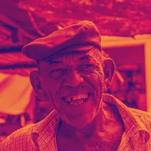

Mappa sfumatura

Ricolora l'immagine in base alla luminosità usando tre colori, con ripetizioni e una fase. Scala luminosità moltiplica il risultato per la luminosità originale dell'immagine.
Impostazioni
| Impostazione | Tipo | Intervallo | Predefinito |
|---|---|---|---|
| Ombre | Colore | – | #1B1464 |
| Mezzitoni | Colore | – | #D4145A |
| Luci | Colore | – | #FBB03B |
| Ripeti | Numero | Da 0.1 a 10 | 1 |
| Fase | Numero | Da 0 a 1 | 0 |
| Inverti | Attivo o disattivo | – | Disattivo |
| Scala luminosità | Attivo o disattivo | – | Disattivo |
| Saturazione | Numero | Da 0 a 2 | 1 |
| Opacità | Numero | Da 0 a 1 | 1 |